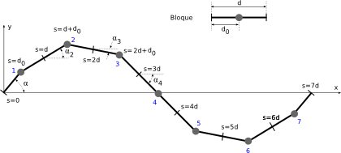

Durante los últimos 5 meses he estado trabajando intensamente en escribir la tesis.
Todavía necesitaré dos meses más para terminarla. Pero aquí voy a publicar un avance
de parte de lo que tengo ya casi terminado:
* Capítulo 2: Encuadre científico-tecnológico. Estado del arte en robótica modular y dónde encaja esta tesis.
* Capítulo 3: Modelos. Presentación y descripción de los modelos de control, cinemáticos y matemáticos usados para la locomoción de los robots ápodos modulares.
* Capítulo 4: Locomoción en 1D. Estudio de la locomoción de los robots ápodos en una dimensión.
* Referencias.
El resto de capítulos están bastante avanzados, pero todavía tengo que trabajar más en ellos.